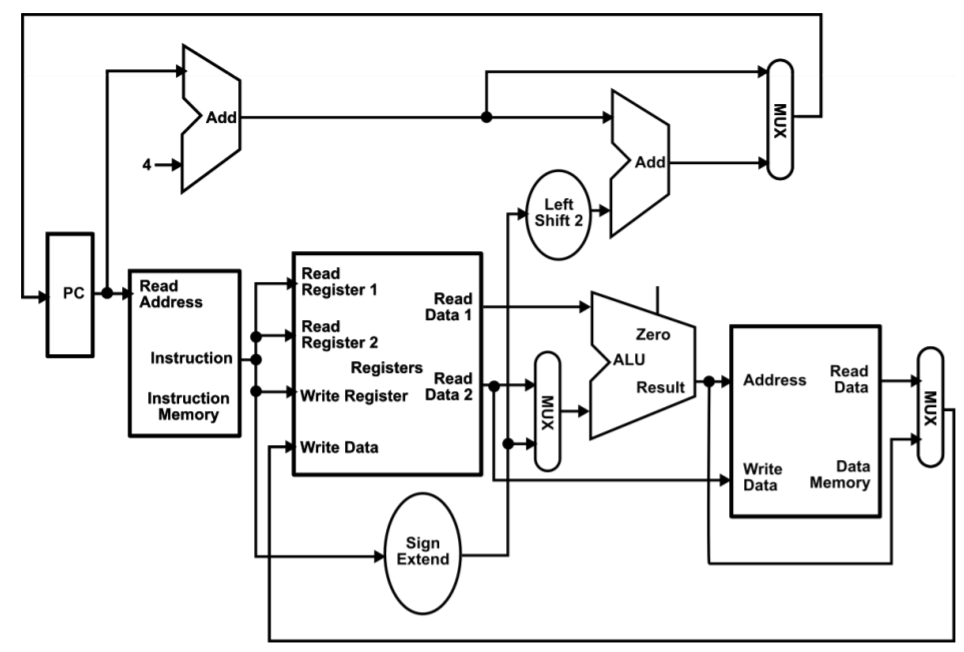

Implementation of a Von Neumann architecture simulation in C++, following a fetch→decode→execute
→write-back→memory access cycle. A limited instruction set and register topology is designed.
The architecture reads assembly code from a text file and prints architecture output.
Two assembly code showcase programs are written:
- To calculate (and print out) the squares of all the integers between 0 and 99.
- To calculate (and print out) all the prime numbers between 1 and 1000.
The computer emulator is designed to read assembly code from a text file and store
it into a two-dimensional string array, this represents the computer memory.
It contains 128 rows and 4 columns, the first block of the array the rows represent
each instruction and the columns are induvial instruction elements. Then the rest of
the array is data memory. The registers are represented as a one-dimensional array
with the first half of the array representing temporary registers and the second half
as saved registers.
The processor fetches the instruction from the memory array. The instruction is decoded
using if statements to read the string type array element stored in the memory and determine
what operation, register and memory location has been inputted. The execute stage uses a
switch statement to identify which operation has been decoded to execute. This cycle repeats
until all the instructions stored in memory have been completed.
Opcodes implemented, where rd, rs and rt are Register Destination, Register Source and Register Target, respectively:
- lw: load word rt, offset(rs)
- sw: store word rt, offset(rs)
- ADD: ADD rd, rs, rt
- SUB: SUB rd, rs, rt
- ADDI: ADDI rd, rs, immediate_value
- MULT: MULT rd, rs, rt
- beq: beq rs, rt, offset
- j: target
